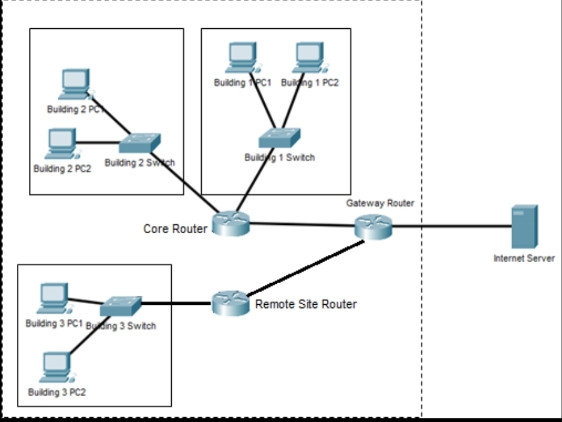

Project One

Me and my other group members had to design a theoretical networking scheme for a fictional company named Cryptomine. We handled how it interacted with both internal and external users and networks.
Project Two

